<center>
<table width="640" border="1" bgcolor="white">

<tr bgcolor="red">
<td align="center">
<font color="white" size="6">
<b>TIMESPÉDIA</b>
</font>
</td>
</tr>

<tr>
<td align="center">

</td>
</tr>

<tr bgcolor="green">
<td align="center">
<font color="white">
<marquee>
O maior arquivo de escudos, times e campeonatos fictícios do Brasil!
</marquee>
</font>
</td>
</tr>

<tr>
<td align="center">
<a href="index.html">Início</a> |
<a href="escudos.html">Escudos</a> |
<a href="times.html">Times</a> |
<a href="camp.html">Campeonatos</a>
</td>
</tr>

<tr>
<td align="center">
<h3> Times do Acre </h3> 
<br>
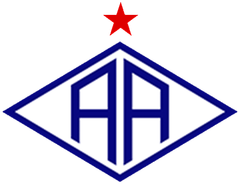<br>Nome: Atlético Acreano<br>Cidade: Rio Branco<br>Fundação: 1952<br><br><hr width="80%">
<br>Nome: Atlético Clube Juventus<br>Cidade: Rio Branco<br>Fundação: 1966<br><br>
<br>Nome: Associação Desportiva Senador Guiomard<br>Cidade: Senador Guiomard<br>Fundação: 1982<br><br>
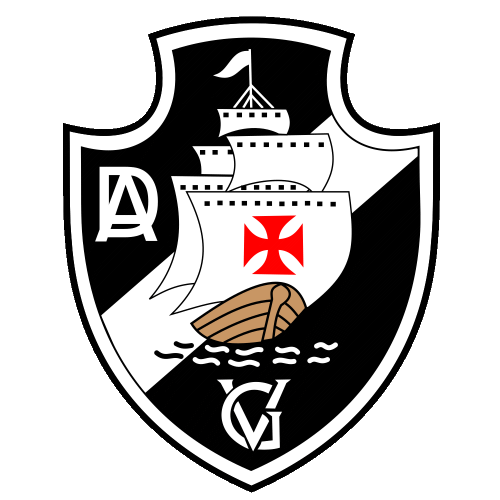<br>Nome: Associação Desportiva Vasco da Gama<br>Cidade: Rio Branco<br>Fundação: 1952<br><br>
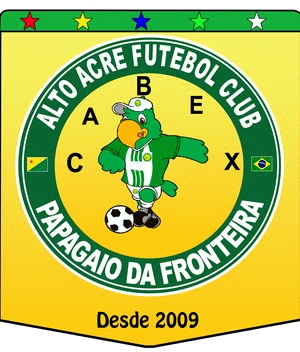<br>Nome: Alto Acre Futebol Club<br>Cidade: Epitaciolândia<br>Fundação: 2009<br><br>
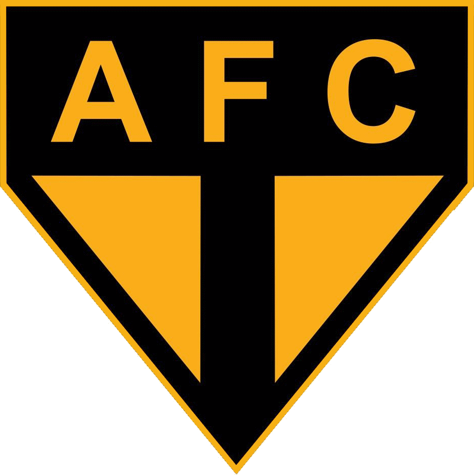<br>Nome: Amapá Futebol Clube<br>Cidade: Rio Branco<br>Fundação: 1969<br><br>
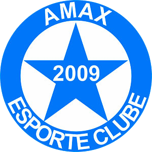<br>Nome: Amax Esporte Clube<br>Cidade: Xapuri<br>Fundação: 2009<br><br>
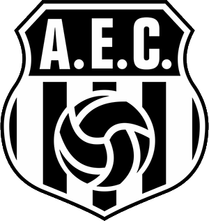<br>Nome: Andirá Esporte Clube<br>Cidade: Rio Branco<br>Fundação: 1964<br><br>
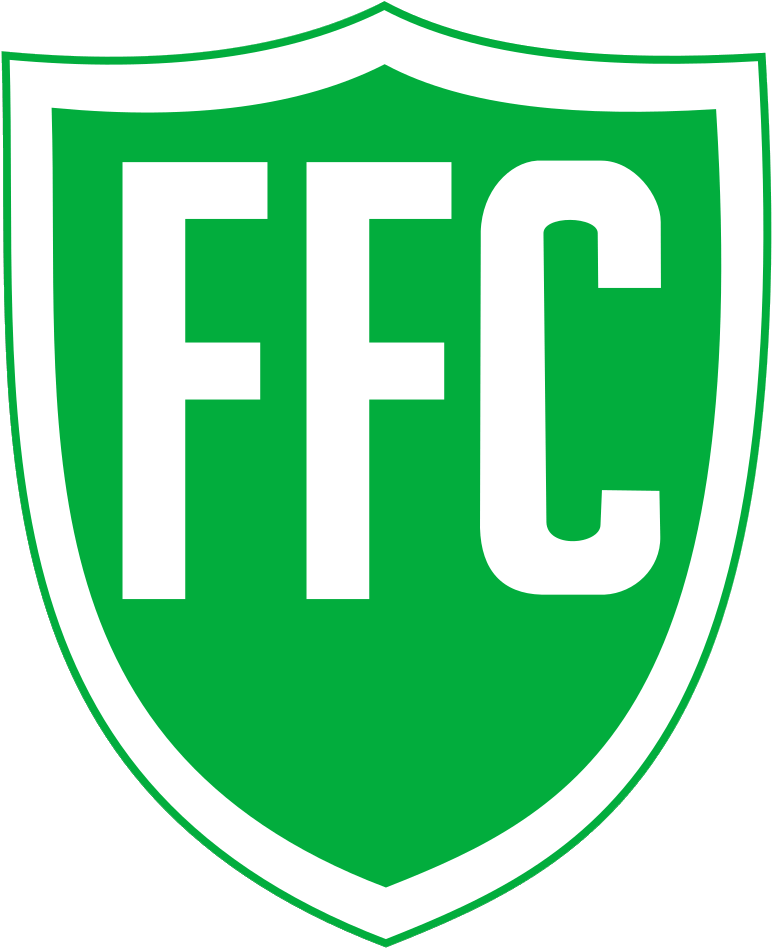<br>Nome: Floresta Futebol Clube<br>Cidade: Senador Guiomard<br>Fundação: 1965<br><br>
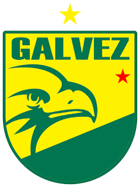<br>Nome: Galvez Esporte Clube<br>Cidade: Rio Branco<br>Fundação: 2011<br><br>
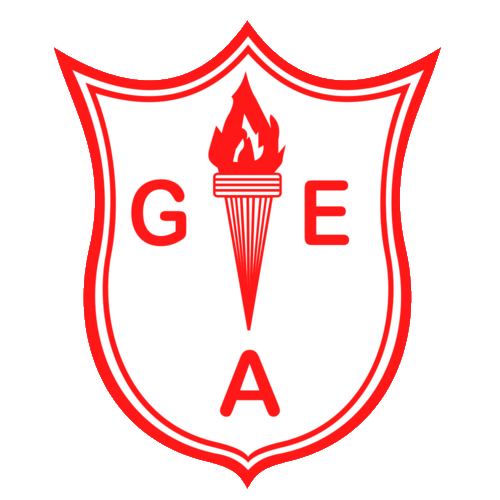<br>Nome: Grêmio Esportivo Acreano<br>Cidade: Sena Madureira<br>Fundação: 1965<br><br>
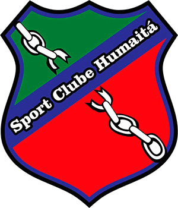<br>Nome: Sport Clube Humaitá<br>Cidade: Porto Acre<br>Fundação: 2003<br><br>
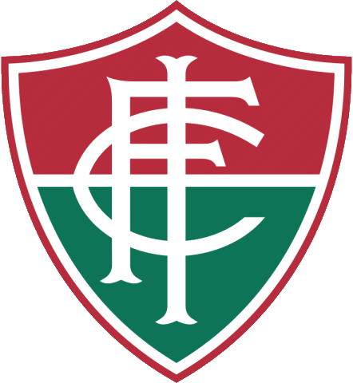<br>Nome: Independência Futebol Clube<br>Cidade: Rio Branco<br>Fundação: 1946<br><br>
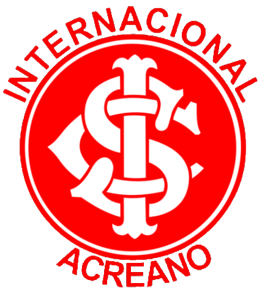<br>Nome: Internacional Sport Club<br>Cidade: Rio Branco<br>Fundação: 1968<br><br>
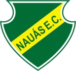<br>Nome: Náuas Esporte Clube<br>Cidade: Cruzeiro do Sul<br>Fundação: 1923<br><br>
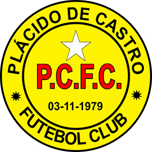<br>Nome: Plácido de Castro Futebol Club<br>Cidade: Plácido de Castro<br>Fundação: 1979<br><br>
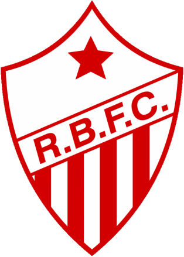<br>Nome: Rio Branco Football Club<br>Cidade: Rio Branco<br>Fundação: 1919<br><br>
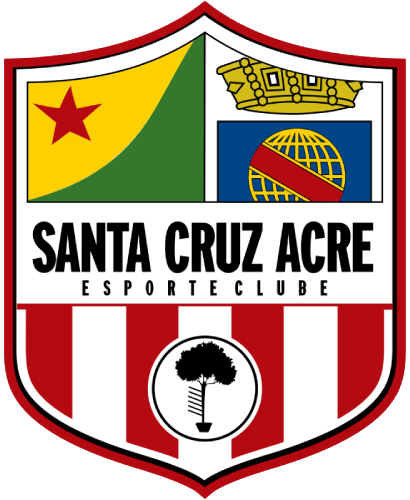<br>Nome: Santa Cruz Acre Esporte Clube<br>Cidade: Rio Branco<br>Fundação: 2022<br><br>
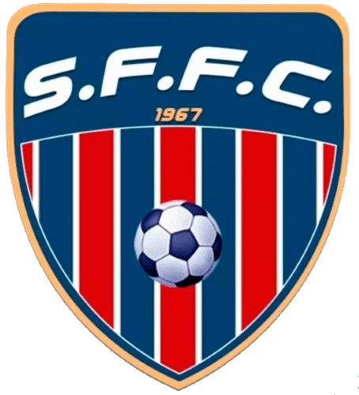<br>Nome: São Francisco Futebol Clube<br>Cidade: Rio Branco<br>Fundação: 1967<br><br>
</td>
</tr>
<tr>
<td align="center">
<small>© 2026 Timespédia</small>
</td>
</tr>

</table>
</center>
